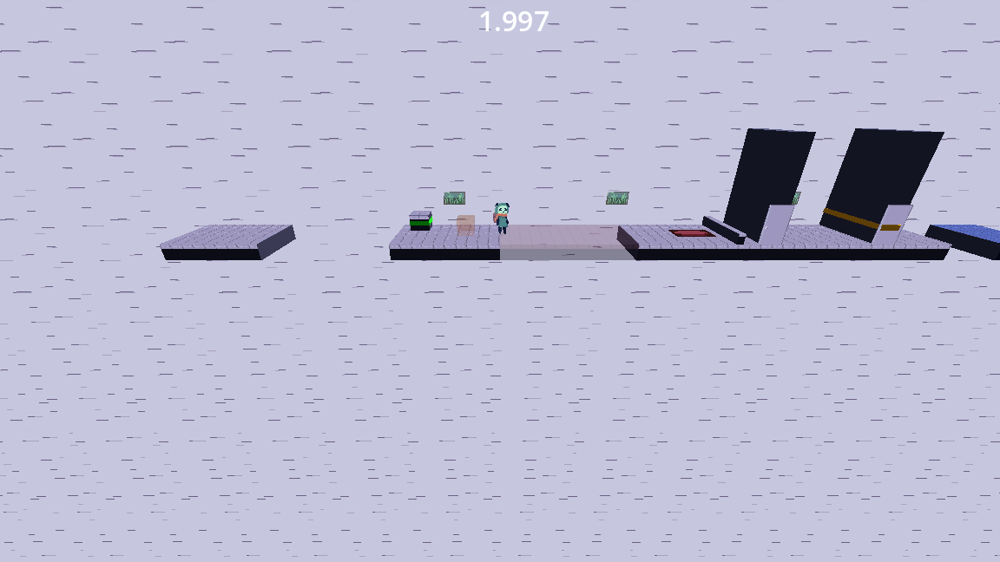
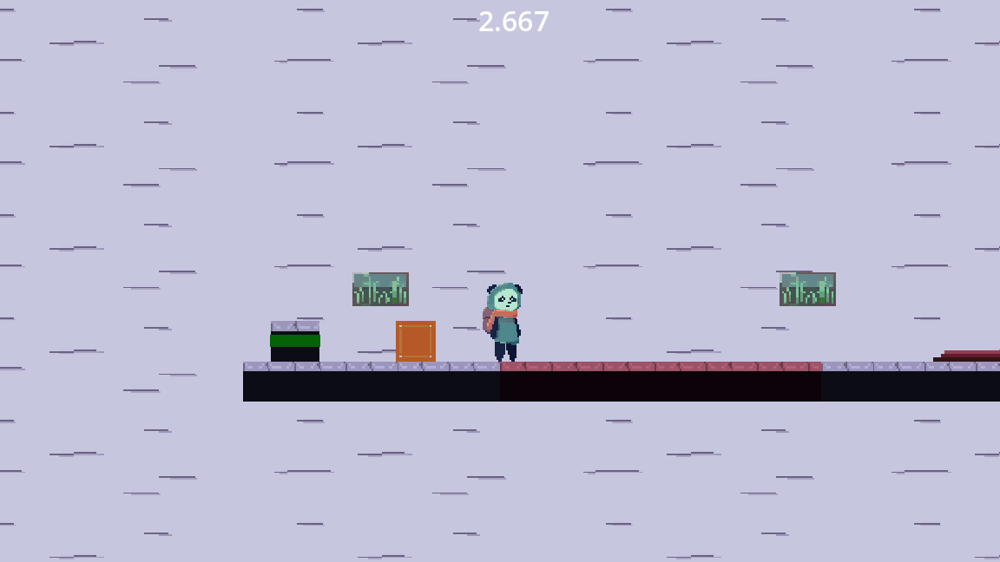
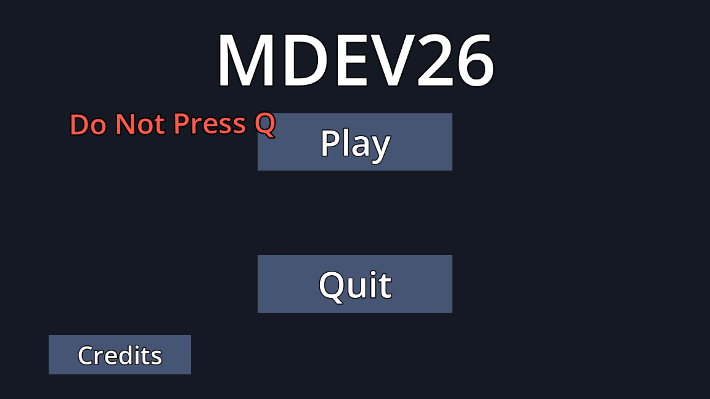

MDEV26 is a puzzle platformer built around one button. Press Q and the whole level switches between a 2.5D world, where you can walk in depth, and a flattened 2D world, where depth is ignored. Gaps you cannot cross in one view become walkable in the other, so the player is always "in the middle" of two ways of seeing the same level.
My Contributions
- The 2.5D / 2D switch: Designed and built the core mechanic. The same level geometry lives on two collision layers: the real world, and a copy stretched along the depth axis for 2D. The player only swaps a collision mask and a depth lock, so any character controller works with it. Switching back to 2.5D snaps the player onto the real depth of the floor below, even in mid-air.
- Interaction system: Keys, locked doors and chests, a key inventory with a HUD, and floating interact prompts. Objects can belong to one view, so a key can exist only in 2D (hidden in a painting) and a vase can hide a key that is only visible from behind, using a line-of-sight check.
- Vanishing push boxes: Boxes the player pushes onto pressure plates that open doors. A blue box exists only in 2.5D and a red box only in 2D. In the other view it becomes a frozen ghost, so its position is remembered when you switch back.
- Level design: Designed four levels that teach one idea at a time (keys, vanishing boxes, carrying a plank across lanes), ending with Level 4: one continuous level where every mechanic feeds the next, with decoy hiding spots and a backtrack to open a chest for the exit key.
- Game feel & flow: A level-complete transition that stops the player, zooms into the exit flag and fades into the results screen, plus a joke main menu where pressing the forbidden Q key switches the menu to 2.5D and drops the Play button onto Quit.
- Reusable prefabs: Built doors, plates, boxes, keys, vases and the exit as drag-and-drop prefabs with live editor previews, so teammates could place level pieces and artist-made sprites without touching code.
- Automated play-through tests: Wrote headless Godot test scripts that play every level with real input (pushing, jumping, switching view mid-air) and check that shortcuts such as hopping a door or jumping a chasm do not work.
2.5D vs 2D
The same spot in Level 4 in both views. In 2D the red bridge is solid and the red box can cross it; in 2.5D the bridge is only a faint ghost.

2.5D view
Depth is real. The 2D-only red bridge is a faint ghost with no collision.

2D view
Depth is flattened. The red bridge is solid and the red box can be pushed across it.

The "Do Not Press Q" Menu
The warning wanders around the screen. Pressing Q anyway switches the menu to 2.5D and drops Play onto Quit.
Team & Credits
Built in 10 days by a small team. Teammates made the character controllers, the plank-carrying system, the art and the audio, and handled production; the sprites you see were drawn by our artist and wired into the prefabs above.